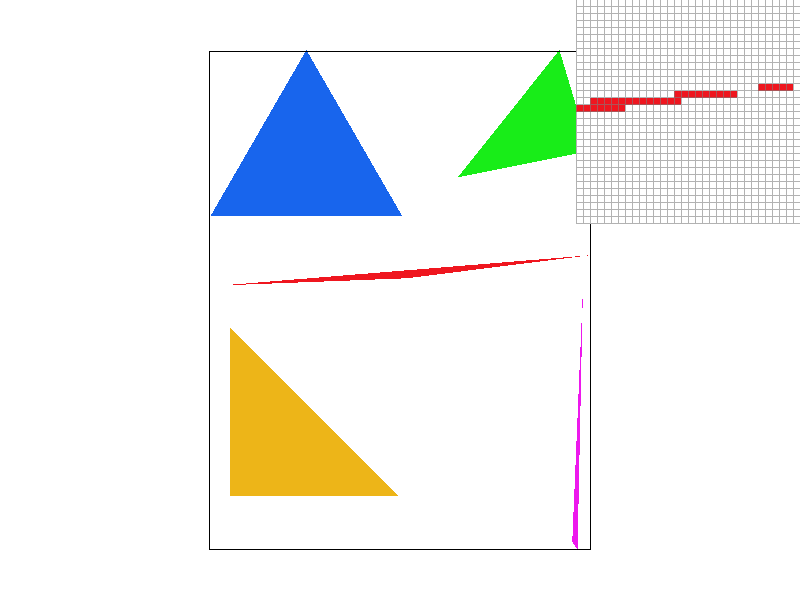
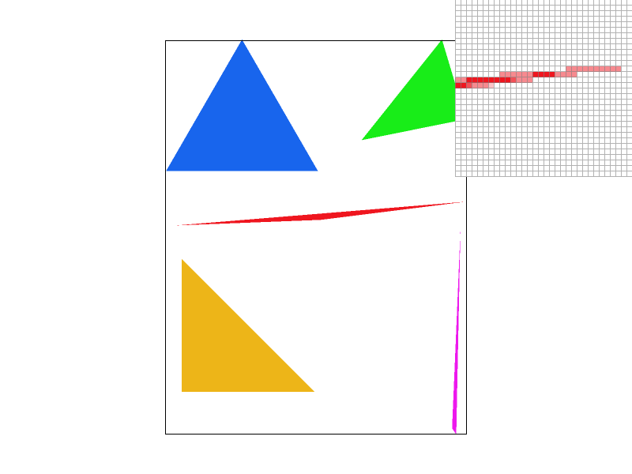
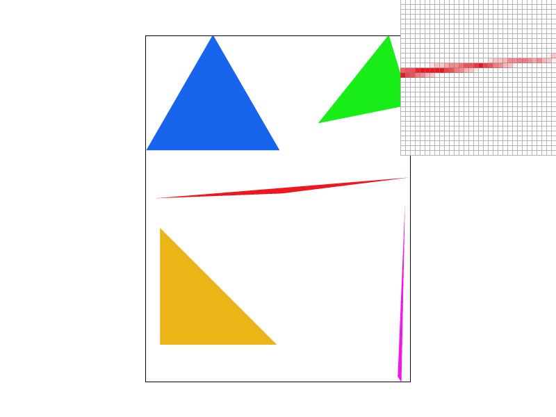
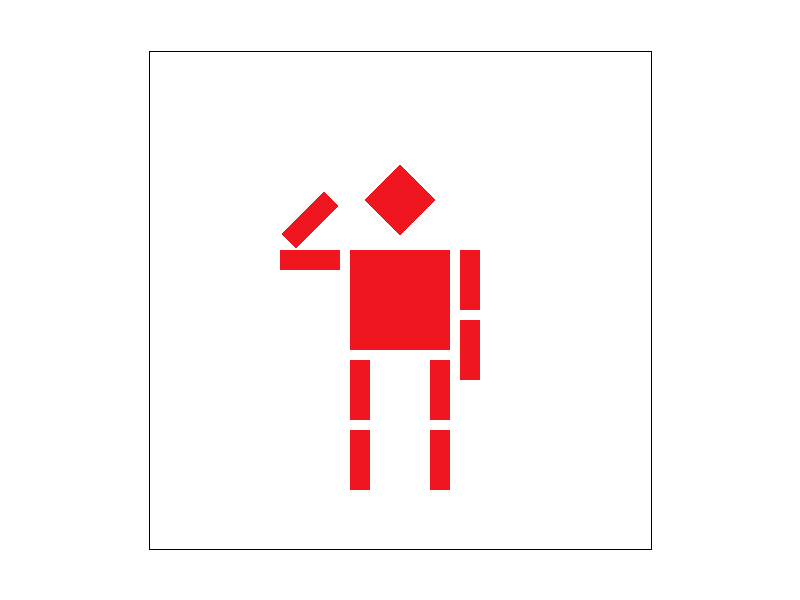
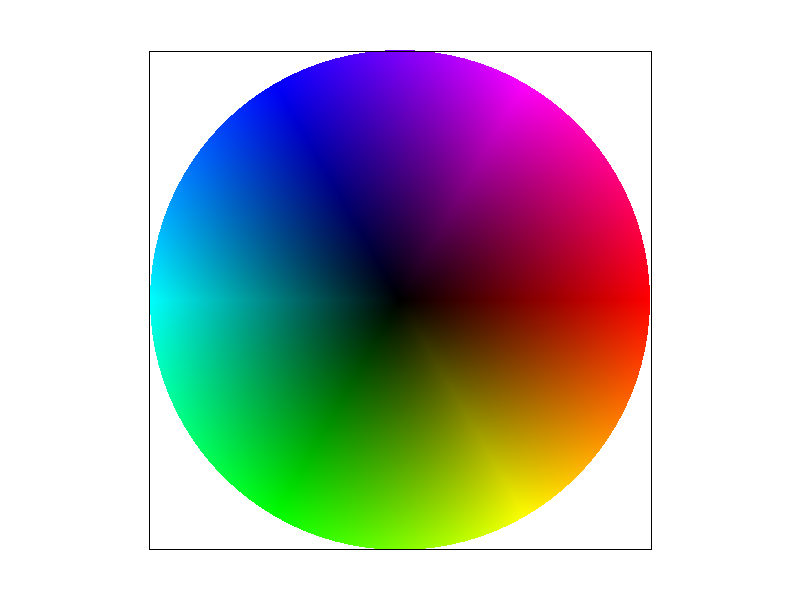
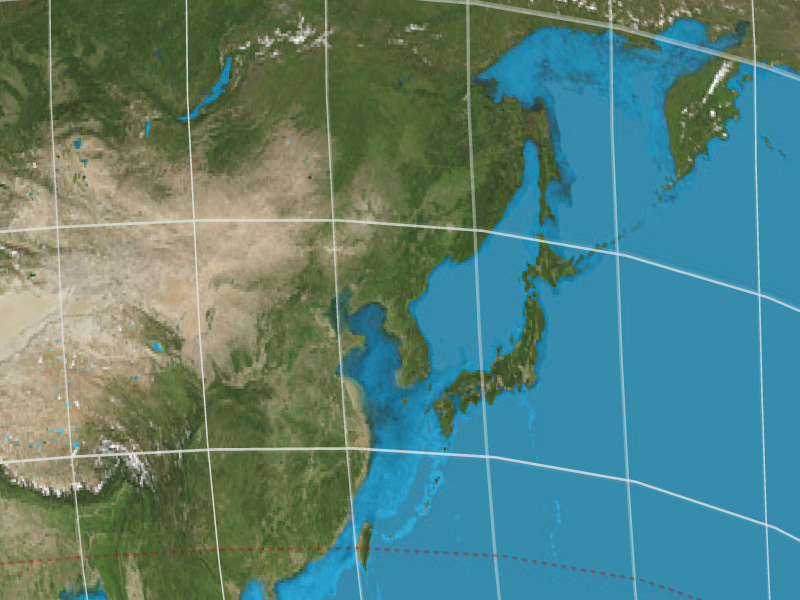
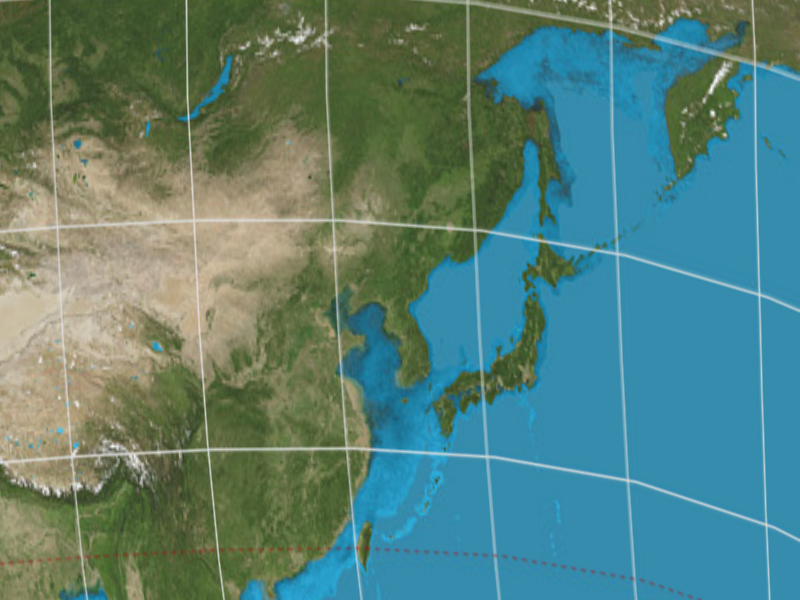
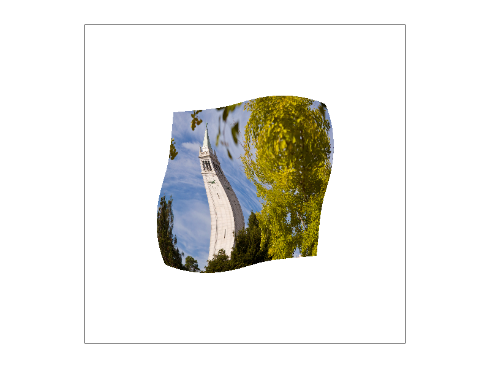

CS184/284A Spring 2026 Homework 1 Rasterizer Write-Up
Link to webpage : cal-cs184-student.github.io/hw-webpages-jaegyumee2/hw1/
Link to GitHub repository : https://github.com/cal-cs184-student/hw1-rasterizer-jaegyumee2
Link to HW page : cs184.eecs.berkeley.edu/sp26/hw/hw1/

Overview
In HW1, I implemented a software rasterizer from scratch.1. Starting with rasterizing single-color triangles, I implemented supersampling to resolve aliasing issues (jaggies)
2. Implemented 2D geometric transforms using matrices and utilized barycentric coordinates to smoothly interpolate colors across triangle faces.
3. Implemented texture mapping using various pixel sampling methods (Nearest, Bilinear) and level sampling with mipmaps.
Through this project, I deeply understood the rendering pipeline, anti-aliasing techniques, and the trade-offs between memory and rendering performance.
Task 1: Drawing Single-Color Triangles
1. Get max and min value of X and Y.
2. Re-check it if they are out of bound.
3. Add 0.5 on X and Y to watch middle of pixel.
4. Use linear equation to check if pixel x,y is in the triangle or not.

Task 2: Antialiasing by Supersampling
1. Increased size of simple_buffer to "width * height * sample_rate".
2. Modified fill_pixel to fill every pixel, not single pixel.
3. Made rasterize_triangle to double double loop and change color of the single supersampled pixel.
4. Modified resolve_to_framebuffer so that can get average the color of supersampled pixels.
5. Through supersampling, we can extract average color of supersampled pixels and it makes high frequency parts smoother. Therefore, we can raterize diagrams more accurate and not-ugly.
|
 |
 |
|
 |
Task 3: Transforms
1. Made robot pull down his left arm.
2. Made robot pull up his right arm so that it salute to me.

Task 4: Barycentric coordinates
Baryecentric coordianates is a method to know weight-balanced point. It let me know how much is the center of pixel far away from each point of triangle. Also, just like center of gravity of triangle, sum of three fraction(L(i)/L(i)_max) is always 1.

Task 5: "Pixel sampling" for texture mapping
Rasterize Textured Triangle
1. Basic loop is similar with Task4.
2. But instead of Color, I interpolated U and V.
3. Get texture info with interpolated U and V through SampleParams.
Sample Nearest
Nearest sampling take texture of only one nearest pixel through round calculation.
Sample Bilinear
1. Bilinear sampling take mixed texture of 4 near pixels.
2. Get index of 4 pixels through floor and ceiling calculation of x and y grid.
3. Get interpolated value s_x and s_y with floor value of x and y.
4. Now mix 4 textures. Mix 2 horizontal pixels of 2 row. And mix 2 vertically mixed texture to final texture value.
|
|
 |
|
 |
|
Task 6: "Level Sampling" with mipmaps for texture mapping
Level Sampling : Level sampling let me know how far away the picture is placed from screen. I can know interpolated U and V of (x+1,y) and (x,y+1) with calculation of task 5. With get_level function, get mipmap level through calculation wtih uv value. After that, we can finally conduct triple sampling includes pixel, linear and level.Comparison
Pixel Sampling
1. Speed : Very fast. It only calculate inside bouding box.
2. Memory : 1 original image memory and bounding box.
3. Performance : No AA. It barely have AA.
Super Sampling
1. Speed : Very slow. (pixel sampling) * (sample_rate)
2. Memory : Too much. (original image memory) * (sampel_rate)
3. Performance : AA GOAT. Its performance is best of three. But especially good at jaggies.
Level Sampling
1. Speed : Fast. it only need to calculate smaller mipmaps.
2. Memory : Not that big. (original image) + (image) / 4 + (image) / 16 + .....
3. Performance : Texture special force. It's perfect to fix texture aliasing. But not enough for jaggies.
|
|
 |
|
|
|